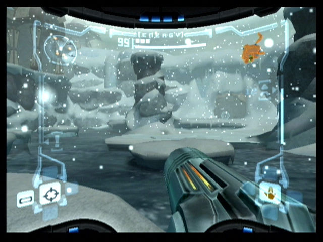

WELCOME TO THE
Metroid Prime was devoloped by Retro Studios and released in 2002 for Nintendo's Gamecube. It is a first-person-shooter where you take on the roll of Samus Aran, a bounty hunter, as she explores the planet Tallon IV searching for the evil Meta Ridley. The gameplay is a mixture of exploration, combat, and puzzles. Progression is non-ninear. As you play you will have to search for new abilities and then use those abilities to explore more of the planet. The game can be confusing to new players, that is why this guide exists. This guide will provide you with tips, tricks, and tutorials on various aspects of the gameplay.
How To Play
The best way to play is to own an original copy of the game for the Gamecube or own Metroid Prime Trilogy for the Wii. If you don't have any copies, don't worry. You can still use an emulator like Dolphin to run the game on your PC.
You can find the Dolphin Emulator here.